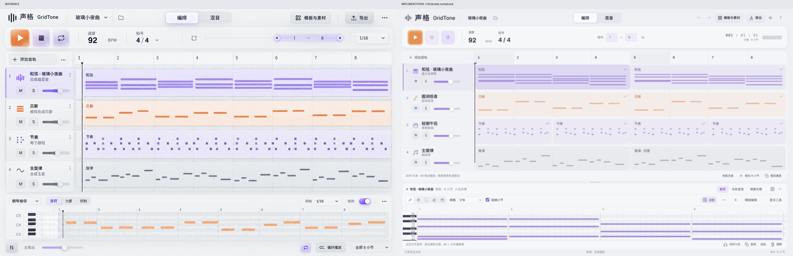
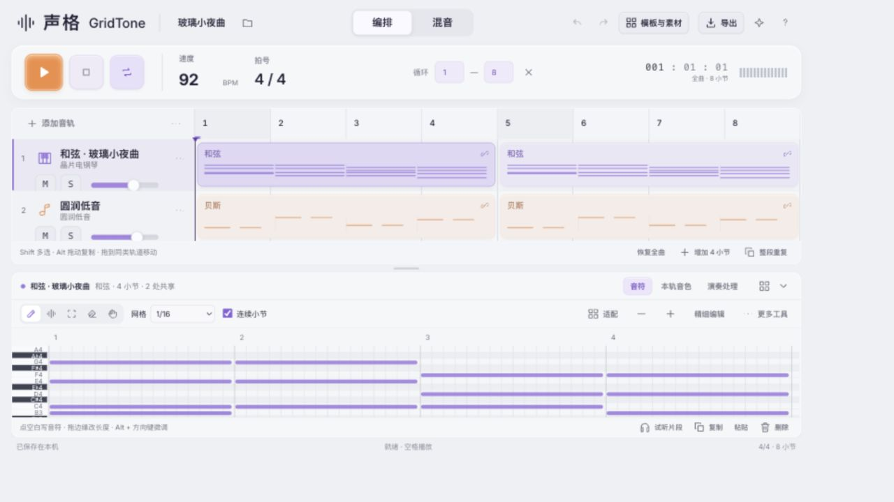

声格 GridTone 1.4
可运行的离线发行版 · 2026-09-16
检查结果
- PASS：123/123 核心测试。
- PASS：14/14 浏览器回归，运行在最终单文件入口。
- PASS：播放中撤销、BPM、Solo 与音量；循环定位；本机保存和恢复；MIDI、WAV、工程重开。
- PASS：真实浏览器右键菜单、精细编辑应用与预听、指针拖动后 Esc 回滚。
- NOT_PROVEN：实体触屏、长时间重负载、声卡端到端延迟和主观听感。
打开软件 · 使用说明 · 设计验收 · 浏览器证据 · 核心测试原文
参考与实现
左侧为选定参考，右侧为真实运行截图。截图保留原始文件，并记录了捕获工具的密度归一化；不据此声称字体抗锯齿逐像素一致。

响应式布局
桌面分屏、可调整下方编辑器。小屏滚动轨道，保留编排/混音、工程、素材与导出入口。
